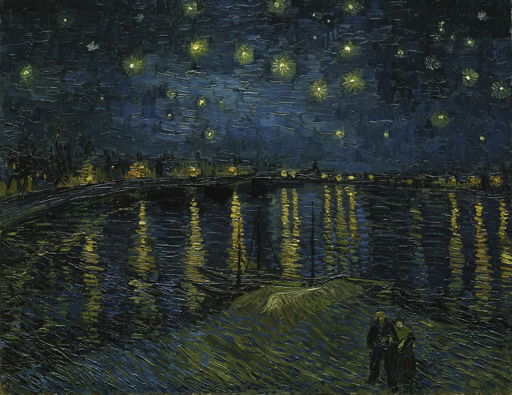

12 April 2026
constellations of you

dear you,
the night leans close.
quiet and immeasurable,
a dark canvas holding its weight.
i feel the vastness of it all
and think of you.
sometimes your face feels like a map,
a scattering of constellations
i am still learning how to read,
quiet anchors in a sky i don’t yet know.
to trace them,
those invisible lines,
from star to star,
would be to risk too much.
my hands are too heavy,
as if touch itself might break
what is only just beginning.
patience whispers,
telling me not to ask the sky to turn quicker,
but some part of me listens
for the hush between your breaths
as if the night itself might answer
questions i am not brave enough to speak aloud.
what does it mean
to carry whole galaxies on your skin?
to walk through the world unaware
that someone could mistake you for the horizon?
i wonder if you know that when you look at me,
it feels like standing beneath
the sky just before it darkens.
under a sky that trembles with meaning,
not naming, nor claiming,
i watch in awe
the way one looks to the first star
to be certain it is truly there.
yours, kate
(artwork: starry night over the rhone by vincent van gogh)